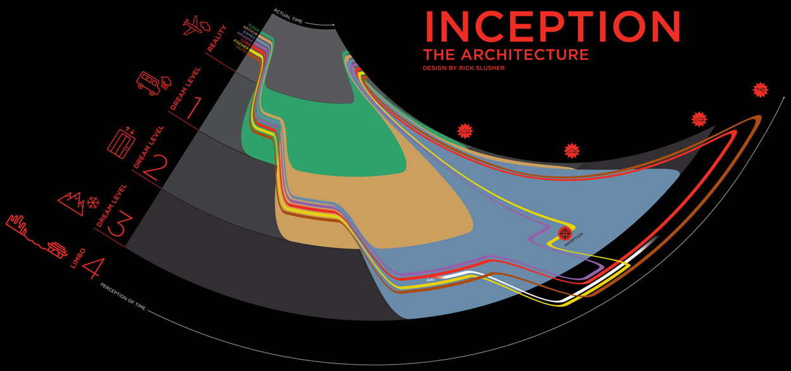

Thu, 19 Aug 2010 17:21:17 · infographic · inception · dreams
infographic inception the anatomy of a dream

Infographic: Inception “The Anatomy of A Dream”
~ Warning: Spoilers ahead for those who haven’t watch the movie!
Thu, 19 Aug 2010 17:21:17 · infographic · inception · dreams

Infographic: Inception “The Anatomy of A Dream”
~ Warning: Spoilers ahead for those who haven’t watch the movie!